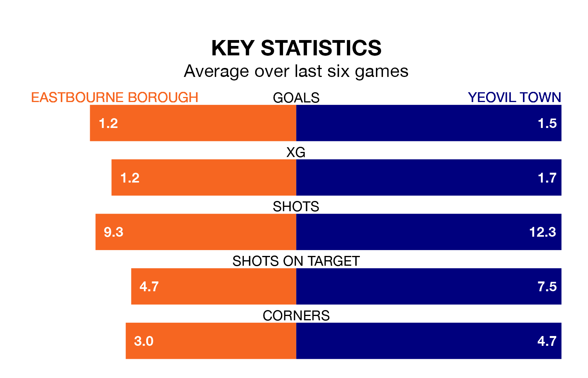

National League North and South's top two sides face each other at the Priory Lane Stadium in Saturday's kick-off, when zero-placed Eastbourne Borough host Yeovil Town.
Eastbourne have picked up six wins and five draws from 23 games so far this season, and sit 24 points below the visitors going into the 3pm match.
Yeovil, meanwhile, have won 14 and drawn five of 22, picking up 47 points.
With 42 goals in 22 games so far this season, Yeovil are the league's third-highest scorers with 1.9 goals per game. And they are conceding fewer than average, letting in 26 goals at a rate of 1.2 per game.
Eastbourne, meanwhile, are below average scorers, with 1.3 goals per game, compared to a league average of 1.4. They have conceded 1.8 goals per game.
Borough are in mixed form in National League North and South, with two wins and a draw from their last six games.
With two wins and three draws over that period, Town's form is slightly better – they have taken nine points from 18, compared to the Sports's seven.
Eastbourne's last match was on December 16, a 2-0 win against Welling United, with getting the goals for the Sports.
Yeovil drew 0-0 with Hampton and Richmond last time out, also on December 16.
Updated: 12:43, 20/12/23